# 第7章 hello的存储管理
# hello的存储器地址空间
Intel处理器采用段页式存储管理，前者将逻辑地址转换为线性地址从而得到虚拟地址，后者将虚拟地址转换为物理地址。 逻辑地址的格式在实模式下为“段地址：偏移地址”，在保护模式下为“段选择符：偏移量”。逻辑地址经过段式映射到线性地址。线性地址经过页面映射后，得到物理地址。 线性地址空间是指一个非负整数地址的有序集合，例如（0，1，2，3……}。在采用虚拟内存的系统中，CPU从一个有N = 2 ^ n个地址的线性地址空间中生成虚拟地址，这个地址空间称为虚拟地址空间，虚拟地址经过MMU转换为物理地址。 在存储器里以字节为单位存储信息，为正确地存放或取得信息，每一个字节单元给以一个唯一的存储器地址，称为物理地址。物理地址用于内存芯片级的单元寻址，与处理器和CPU连接的地址总线相对应。
# Intel逻辑地址到线性地址的变换-段式管理
段-偏移地址的结构如下：
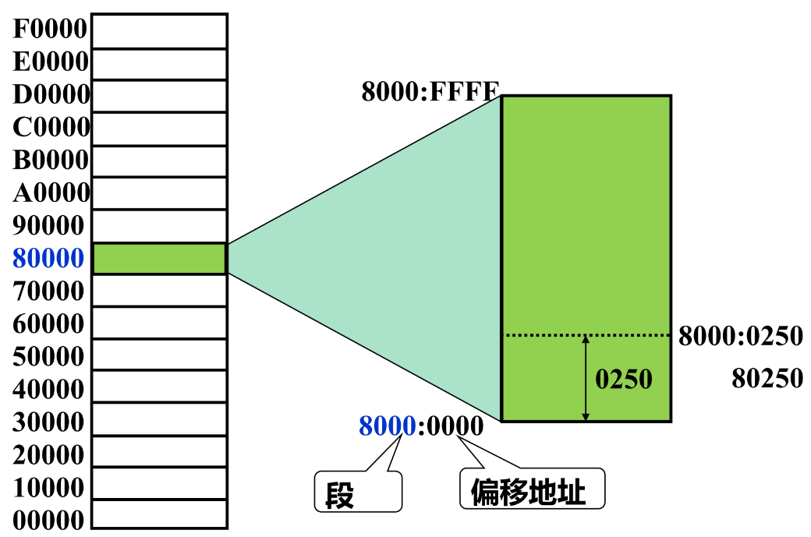
转换为线性地址时，先将段号左移4位（即乘0x10）再加上偏移地址即可。
# Hello的线性地址到物理地址的变换-页式管理
使用虚拟地址的寻址方式，简单流程如下：
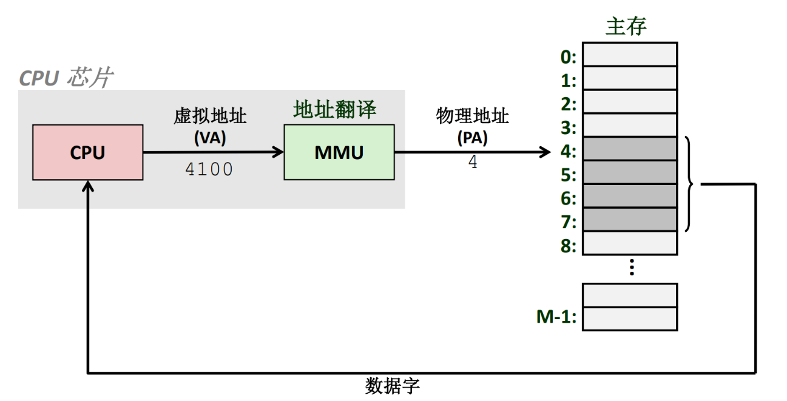
虚拟地址转换成物理地址，这个任务叫做地址翻译，由CPU上的MMU完成（内存管理单元）。地址翻译基于存储的页式管理。 虚拟内存被组织为一个由存放在磁盘上的N个连续的字节大小的单元组成的数组。每个字节都有一个唯一的虚拟地址，作为到数组的索引。磁盘上数组的内容被缓存在物理内存中。磁盘上的数据被分割成块，这些块作为磁盘和主存之间的传输单元。这些内存块被称为页。虚拟内存分割出的页称为虚拟页，物理内存分割出的块称为物理页。 页有以下分类：
- 未分配的：系统还未分配（或创建）的页。未分配的页没有任何数据与他们相关联，因此也就不占用任何磁盘空间。
- 缓存的：当前已缓存在物理内存中的已分配页。
- 未缓存的：未缓存在物理内存中的已分配页。
三种情况下的页，真实状态如下图：
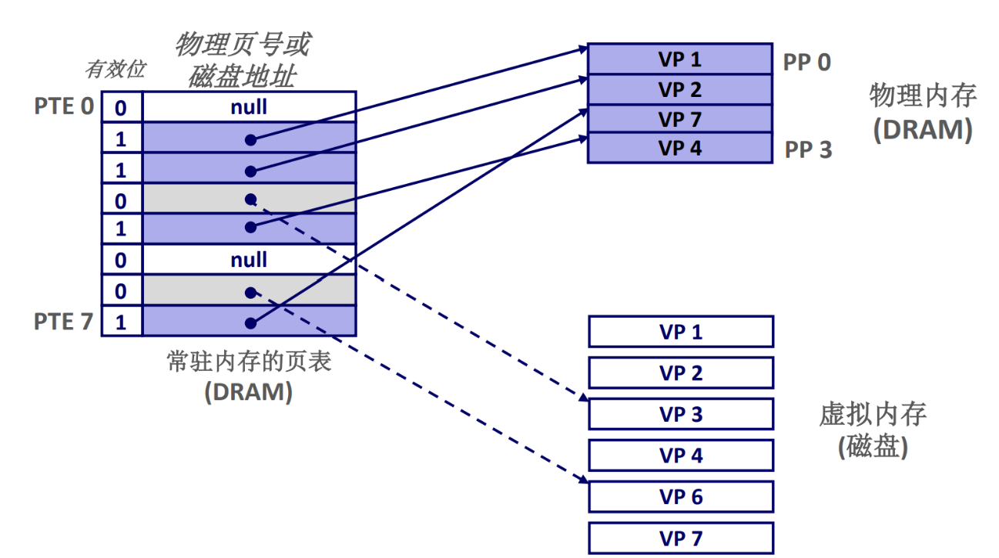
Linux 系统有自己的虚拟内存系统， Linux将虚拟内存组织成一些段的集合，段之外的虚拟内存不存在因此不需要记录。内核为 hello 进程维护一个段的任务结构即下图中的 task_struct，其中条目 mm 指向一个 mm_struct，它描述了虚拟内存的当前状态，pgd 指向第一级页表的基地址（结合一个进程一串页表），mmap 指向一个 vm_area_struct 的链表，一个链表条目对应一个段，所以链表相连指出了 hello 进程虚拟内存中的所有段。
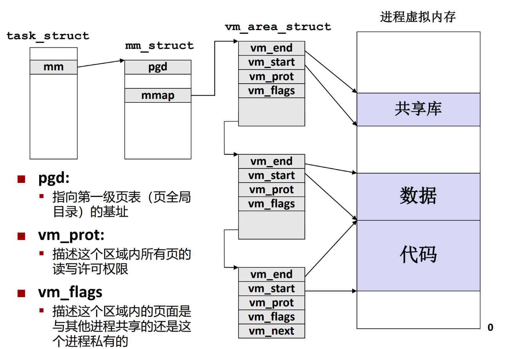
将物理内存中的虚拟内存缓存称为DRAM缓存，同任何缓存一样，虚拟内存系统必须有某种方法来判定一个虚拟页是否缓存在DRAM中的某个地方。如果是，系统还必须确定虚拟页存放在哪个物理页中。如果不命中，系统必须判断这个虚拟页存放在磁盘的哪个位置，在物理内存中选择一个牺牲页，并将虚拟页从磁盘复制到DRAM中，替换这个牺牲页。 这些功能都需要页表，页表的结构如下图：
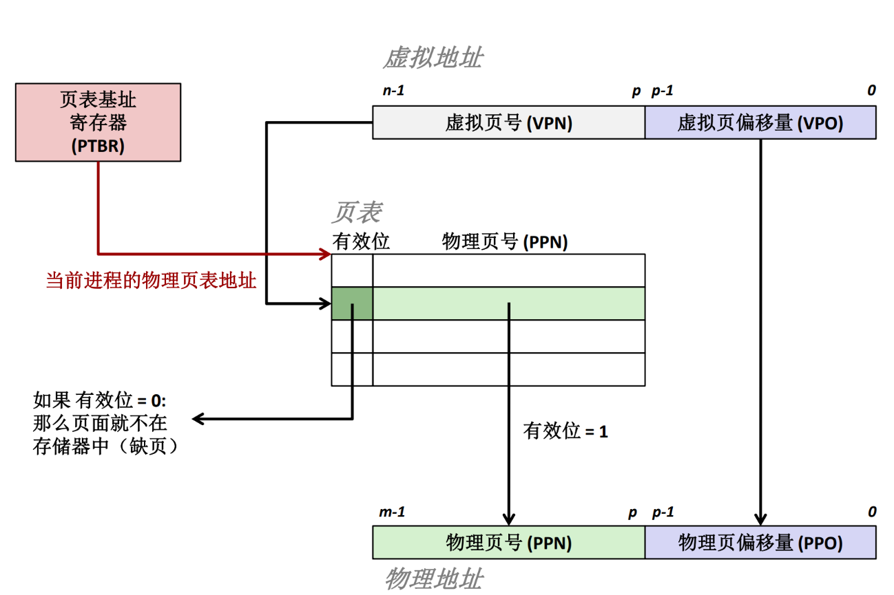
页表将虚拟页映射到物理页。每次地址翻译软件将一个虚拟地址转换为物理地址时，都会读取页表。操作系统负责维护页表的内容，以及在磁盘与物理内存之间来回传送页。
# TLB与四级页表支持下的VA到PA的变换
Intel Core i7 处理器内存系统如下图：
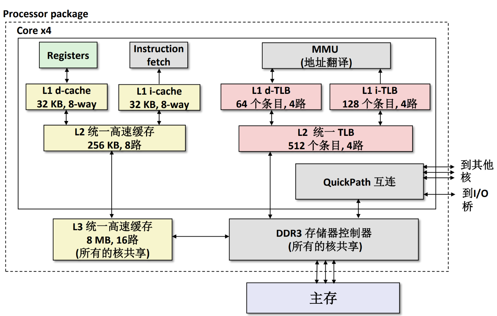
该处理器采用的就是TLB与四级页表支持的翻译方案。虚拟地址(VA)48位，物理地址(PA)52位，虚拟地址的0~11位是VPO(虚拟页偏移量)，12~47位是VPN(虚拟页号。结构如下图：
)
利用VPN到页表中查找对应的页，页表被分为四级，每级对应12~47位中的9位，在一级页表中查找与VPN的27~35位对应的二级页表，再在这个二级页表中查找VPN的18~26位对应的三级页表，以此类推，最后在四级页表中找到目标页表条目，这个页表条目中存储的就是PPN(物理页号)，VPO与PPO(物理页偏移量)相等，直接将这两部分合起来就得到了物理地址(PA)，即PA=PPN+PPO。该步骤如下图：
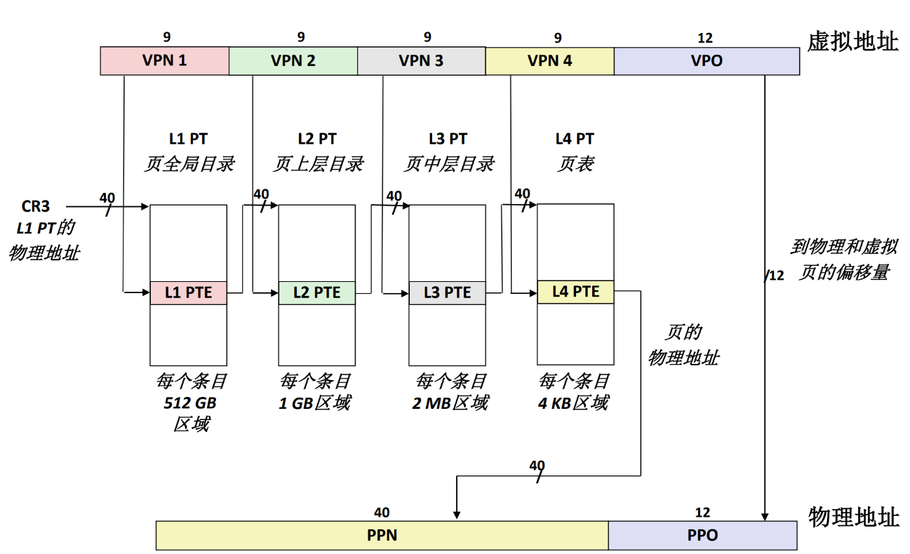
# 三级Cache支持下的物理内存访问
Intel Corei7处理器采用的就是三级Cache支持下的物理内存访问。已经通过虚拟地址得到了物理地址，物理地址有52位，0~5位是CO（Cache偏移量），6~11位是CI（Cache索引），12~51位是CT（Cache标记），我们先利用CI找到对应的Cache组，如CI=0，就找编号为0的Cache组，每一个Cache组中有8个Cache行，我们找到标记为等于CT的Cache行，如果这个行存在且有效位为1，则缓存命中，取出偏移量为CO的字节，并传递给CPU。如果缓存未命中，则继续到L2中寻找，L2未命中到L3中，L3未命中到主存中寻找。 总的地址翻译及访存流程如下图：
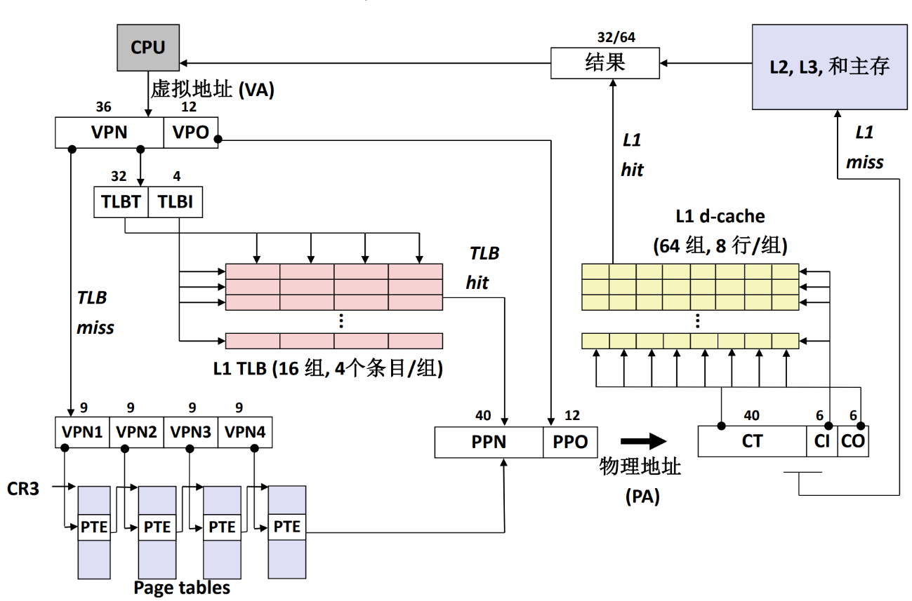
# hello进程fork时的内存映射
运行hello程序时，shell会调用fork为hello创建一个新进程。 首先，内核为新进程创建各种数据结构，并分配给它一个唯一的PID。为了给这个新进程创建虚拟内存，它创建了当前进程的mm struct、区域结构和页表的原样副本。它将两个进程（子进程和shell进程）中的每个页面都标记为只读，并将两个进程中的每个区域结构都标记为私有的写时复制。
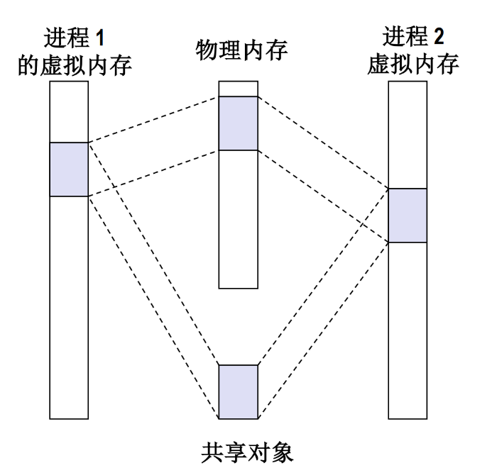
也就是说，fork创建新进程后，因为新进程是父进程的一个副本，为了提高速度，两个进程的虚拟内存映射的是同一块物理内存，只不过是写时复制的。也就是说当新进程的某一虚拟页发生了更改，与父进程的虚拟页不同时，再将新进程被更改的虚拟页映射到另一个块物理页上。
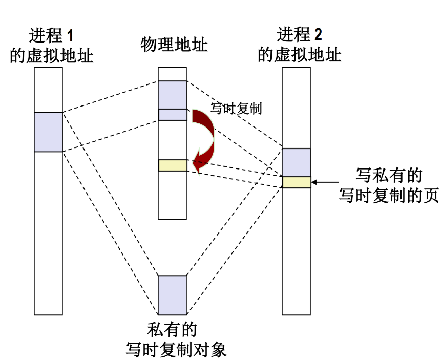
# hello进程execve时的内存映射
execve函数加载并运行hello程序需要以下几个步骤：
- 删除已存在的用户区域
删除当前进程虚拟地址的用户部分中已存在的区域结构。（即清除这个进程曾经运行过的程序遗留下来的痕迹，为新程序初始化区域）
- 映射私有区域为新程序的代码、数据、bss和栈区创建新的区域结构。所有的这些区域都是私有的，写时复制的。代码和数据区被映射为hello文件中的.text和.data区。bss区是请求二进制零的，映射到匿名文件，其大小包含在hello中。
栈和堆也是请求二进制零的，初始长度为0。
映射共享区域如果hello程序与共享对象链接，比如标准C库libc.so，那么这些对象都是动态链接到这个程序的，然后再映射到用户虚拟地址空间中的共享区域内。
设置程序计数器（PC）。execve做的最后一件事就是设置当前进程上下文中的程序计数器，使之指向代码区域的入口点。下一次调度这个进程时，它将从这个入口点开始执行。Linux将根据需要换入代码和数据页面。
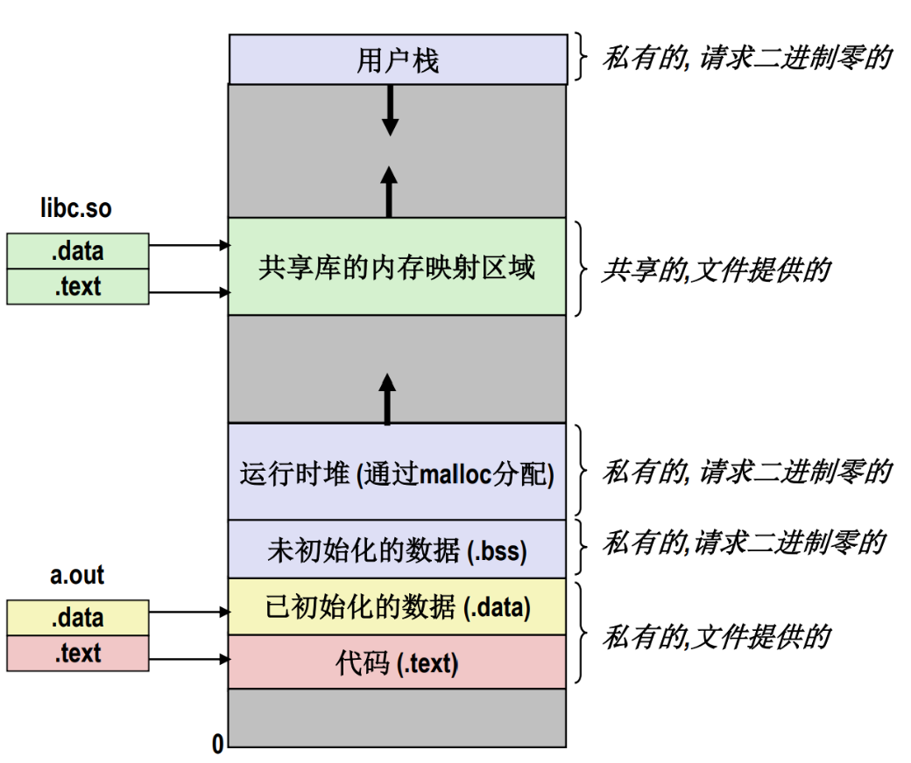
# 缺页故障与缺页中断处理
通过页表实现地址翻译，命中时的步骤和流程图为：
- 处理器生成了一个虚拟地址，并把它传送给MMU
- MMU生成PTE地址，并从高速缓存器/主存请求得到它
- 高速缓存/主存向MMU返回PTE
- MMU构造物理地址，并把它传送给高速缓存/主存
- 高速缓存/主存返回所请求的数据字给处理器
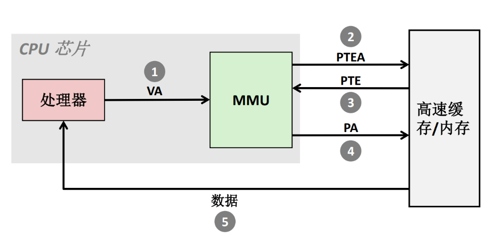
地址翻译不命中时，步骤和流程图如下：
- 处理器生成了一个虚拟地址，并把它传送给MMU
- MMU生成PTE地址，并从高速缓存器/主存请求得到它
- 高速缓存/主存向MMU返回PTE
- PTE有效位为零，因此MMU触发缺页异常，传递CPU中的控制到操作系统内核中的缺页异常处理程序
- 缺页处理程序确定物理内存中牺牲页(若页面被修改，则换出到磁盘)
- 缺页处理程序调入新的页面，并更新内存中的PTE
- 缺页处理程序返回到原来进程，再次执行缺页的指令
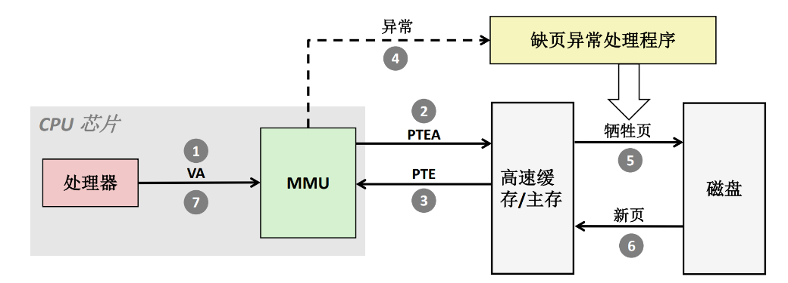
# 动态存储分配管理
程序中的printf会调用malloc函数，即一个显式分配器。程序通过调用malloc的函数来从堆中分配块。 动态内存分配器维护着一个进程的虚拟内存区域，称为堆。如堆是一个请求二进制零的区域，它紧接在未初始化的数据区域后开始，并向上增长。对于每个进程，内核维护着一个指针brk，它指向堆的顶部。
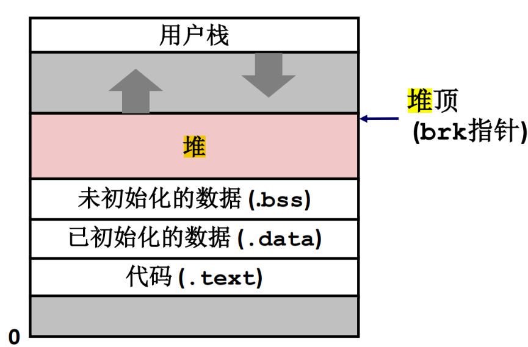
分配器将堆视为一组不同大小的块的集合。每个块就是一个连续的虚拟内存片， 要么是已分配的，要么是空闲的。已分配的块显式地保留为供应用程序使用，空闲块保持空闲，直到它显式地被应用所分配(malloc)。一个以已分配的块保持分 配状态直到它被释放，这种释放要么是应用程序显式执行的(如free)，要么是内存分配器自身隐式执行的(如垃圾收集器)。 分配器有两种基本风格：显式分配器和隐式分配器。两种分配器都要求应用程序显式地分配块。不同之处在于显式分配器要求应用显式地释放任何已分配的块。C程序通过调用malloc函数来分配一个块，并通过free函数来释放这个块，属于显式分配器。 任何的分配器都需要一些数据结构，允许它来区别块边界，以及区别已分配块和空闲块。大多数分配器将这种信息嵌入块本身。一个简单的方法如下：
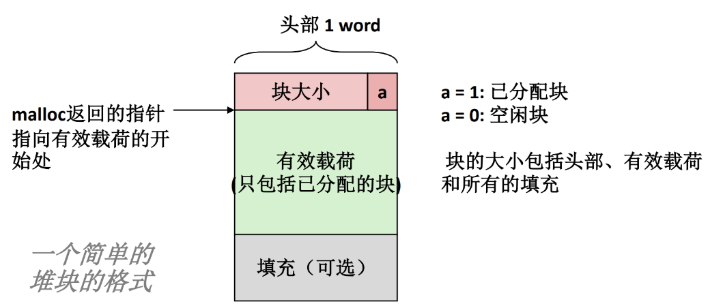
一个块由一个字大小的头部、有效载荷以及可能的一些额外的填充组成。头部编码了这个块的大小，以及这个块是已分配的还是空闲的。如果我们强加一个双字对齐的约束条件，那么块大小就总是8的倍数，且块大小的最低3位总是0。因此我们只需要内存大小的29个高位，释放剩余的3位来编码其他的信息。我们用最低位来指明这个块是已分配的还是空闲的。 我们可以将堆组织成为一个连续的已分配块和空闲块的序列，如下图：
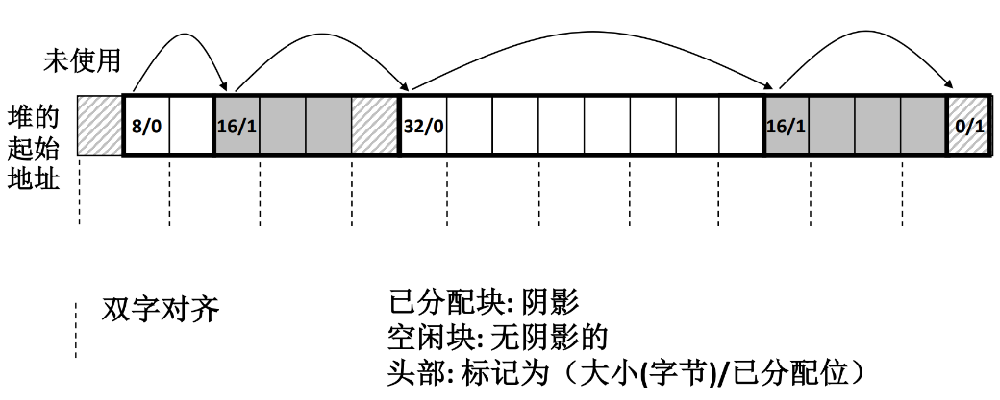
这种结构为隐式空闲链表，因为空闲块是通过头部中的大小字段隐含地连接着的。分配器可以通过遍历堆中的所有块，从而间接地遍历整个空闲块的集合。 当一个应用请求一个k字节的块时，分配器搜索空闲链表，查找一个足够大可以放置所请求块的空闲块。分配器执行这种搜索的方式是由放置策略确定的。放置策略有三种：
- 首次适配，从头开始搜索空闲链表，选择第一个合适的空闲块。
- 下一次适配，从上一次查询结束的地方开始，选择第一个合适的空闲块。
- 最佳适配，检查每个空闲块，选择适合所需请求大小的最小空闲块。
一旦分配器找到一个匹配的空闲块，它就必须做另一个策略决定，那就是分配这个空闲块中的多少空间。一个选择是利用整个块，虽然这种方式简单而快捷，但是主要的缺点就是当所需空间小于分配的空闲块的空间时，会造成内部碎片。这种情况下的内存块状态如下：
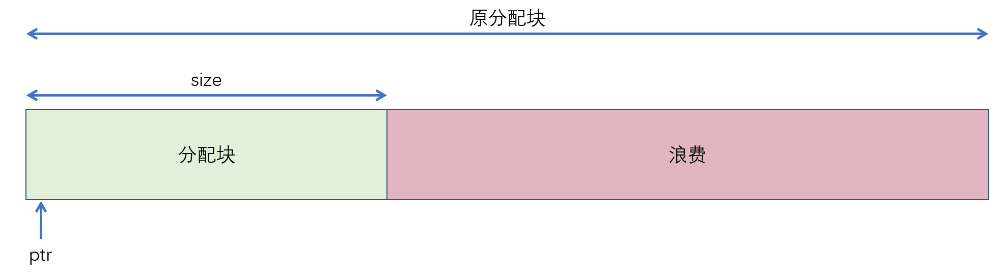
分配器通常会选择将这个空闲块分割为两部分，一部分变成合适大小的分配块，剩下的变成新的空闲块。
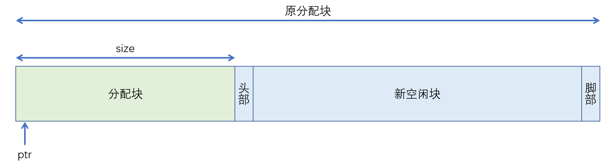
当分配器释放一个已分配块时，可能有其他空闲块与这个新释放的空闲块相邻，这些空闲块导致一种假象：它们明明连在一起，却不能合在一起使用。比如两个3字节的空闲块连在一起，却无法成功申请一个4字节的空闲块，这就造成了假碎片。因此我们需要合并相邻的空闲块。这就出现了一个重要的策略决定，那就是何时执行合并。分配器可以选择立即合并，也就是在每次一个块被释放时，就合并所有的相邻块。或者它也可以选择推迟合并，例如直到某个分配请求失败，然后扫描整个堆，合并所有空闲块。快速的分配器通常会选择某种形式的推迟合并。 分配器可以使用边界标记法来合并空闲块，这种思想是在每个块的结尾处添加一个脚部，脚部就是头部的一个副本。如果每个块包含这样一个脚部，那么分配器就可以通过检查它的脚部判断前面一个块的起始位置和状态，这个脚部总是在距当前块开始位置一个字的距离。
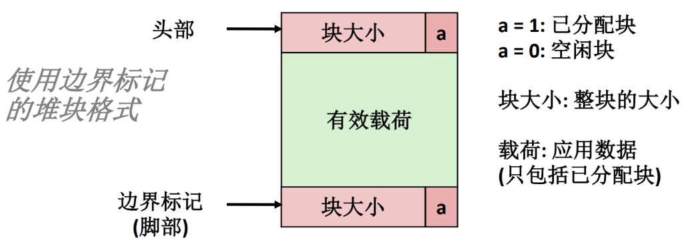
当合并时，可能会出现4中情况：
- 前后都是已分配，直接返回
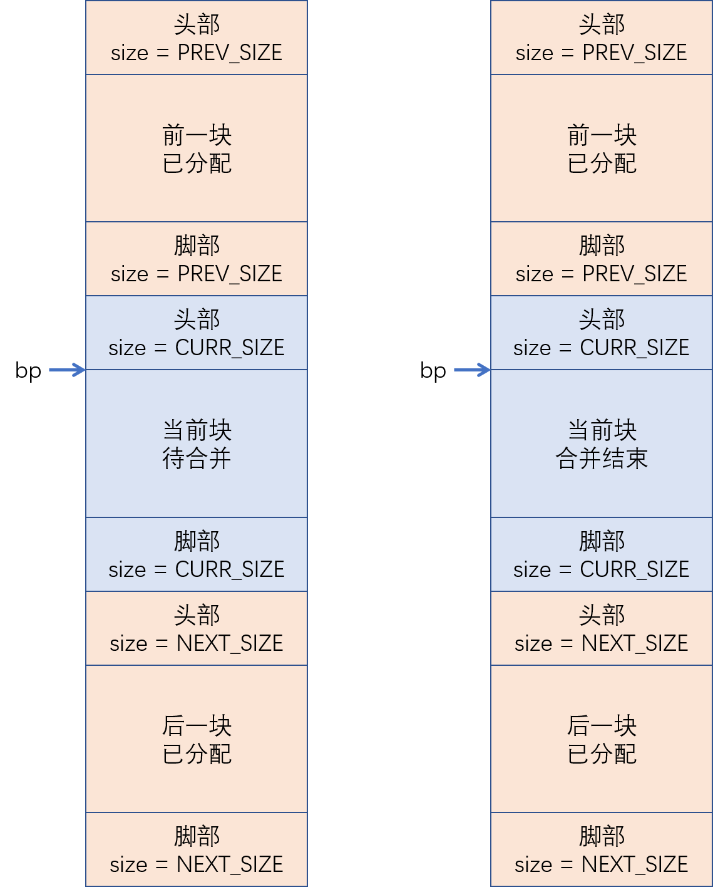
- 后边的是空闲块，需要合并。重新设置大块的头部和脚部，size为两个块size之和，alloc为0。
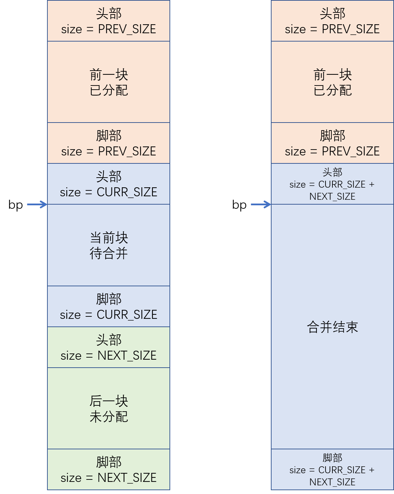
- 前边的是空闲块，需要合并。重新设置大块的头部和脚部，size为两个块size之和，alloc为0。
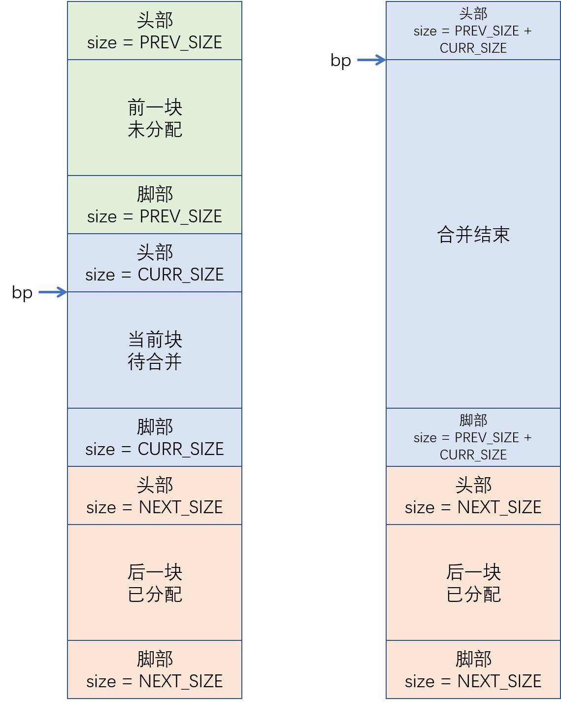
- 两侧都是空闲块，需要合并。重新设置大块的头部和脚部，size为三个块size之和，alloc为0
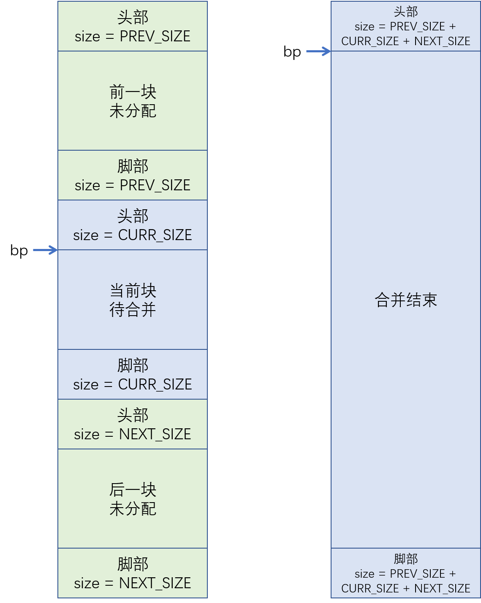
根据四种情况的分析可知，已分配块是不需要脚部的。脚部中的alloc信息可以存放在下一个块的头部中，因此可以优化块结构如下：
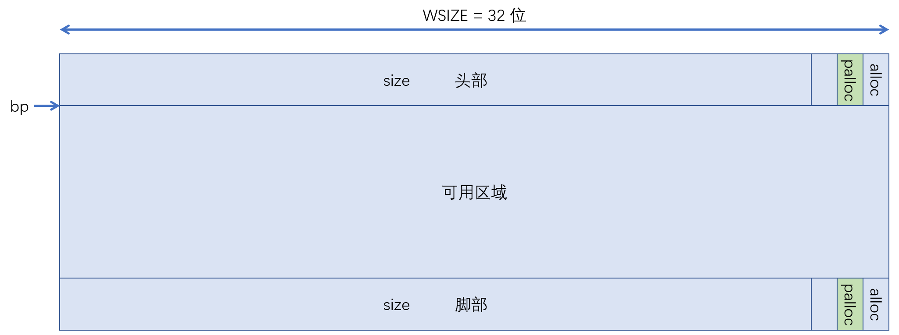
出现一个已分配块时，可以将下一个块的头部倒数第二位置为1（倒数第一位是这个块的分配情况）：
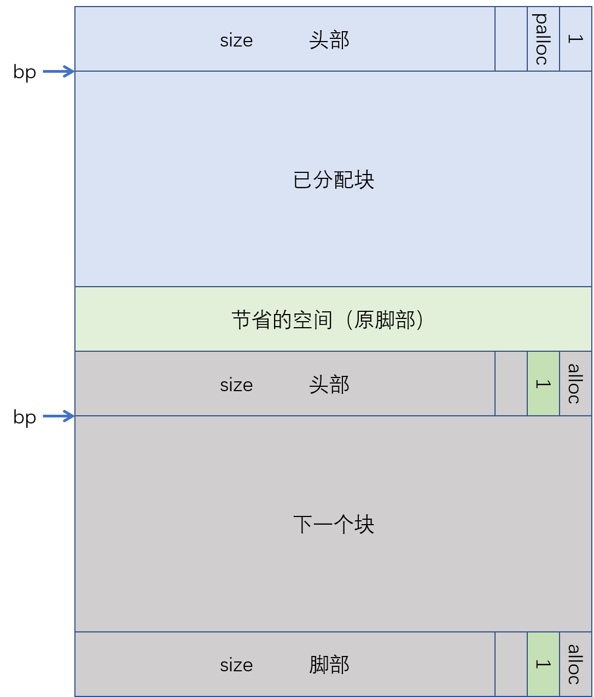
比隐式空闲链表更好的方法是将空闲块组织为某种形式的显示数据结构，即显式空闲链表，例如堆可以组织成一个双向的空闲链表，在每个空闲块中都包含一个pred（前驱）和succ（后继）指针。此时堆块的结构如下：
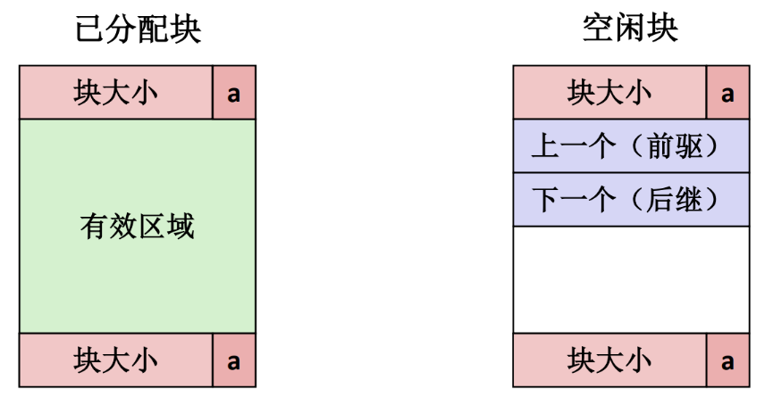
这样首次适配的分配时间从块总数的线性时间减少到了空闲块数量的线性时间。不过，释放一个块可以是线性的，也可以是个常数，这取决于我们所选择的空闲链表中块的排序策略：
- 用后进先出（LIFO）的顺序维护链表，将新释放的块放置在链表的开始处。使用LIFO的顺序和首次适配的放置策略，分配器会最先检查最近使用过的块。在这种情况下，释放一个块可以在常数时间内完成，如果使用了边界标记，那么合并也可以在常数时间内完成。
- 按照地址顺序来维护链表,其中链表每个块的地址都小于它后继的地址。在这种情况下释放一个块需要线性时间的搜索来确定合适的前驱。
分离空闲链表是一种内存利用率更高的结构，图示如下：
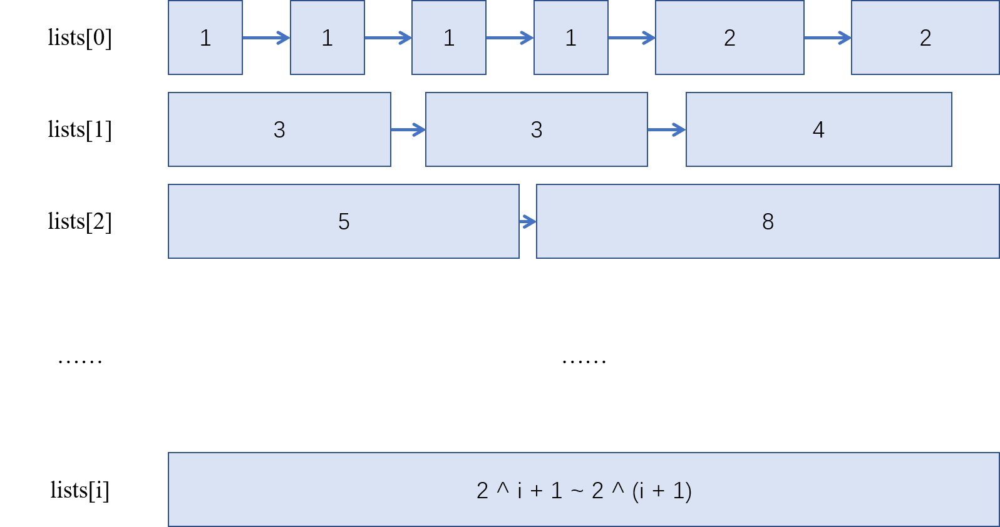
通常每个小空闲块都有单独的大小类，对于大空闲块，各个链表按照2的幂分类。
# 本章小结
本章主要介绍了 hello 的存储器地址空间、intel 的段式管理、hello 的页式管理。
以 Intel Core i7 在指定环境下介绍了 VA 到 PA 的变换、物理内存访问，还介绍了 hello进程 fork 时的内存映射、execve 时的内存映射、缺页故障与缺页中断处理、动态存储分配管理。